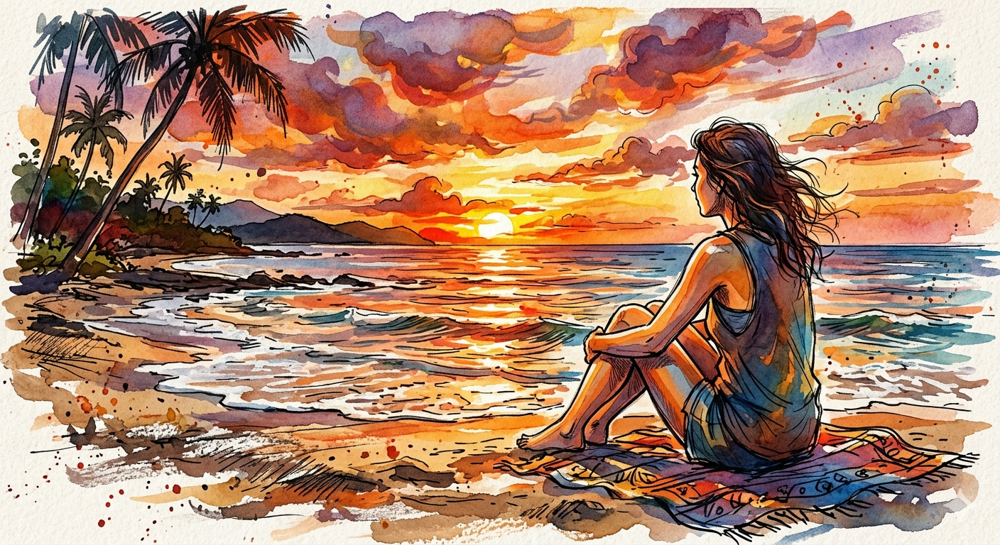

Kala:
Seperempat usiamu habis untuk mempelajari alfabet di mataku, Aksa. Kita telah melewati musim-musim di mana dunia terasa hanya milik berdua-saat masa depan hanya sebatas rencana seperti makan malam atau liburan. Aku jauh mengenalmu lebih baik daripada aku mengenal detak jantungku sendiri. Kau adalah arsip ingatan yang rapi di ruang kepalaku; dari caramu menenangkanku, melipat ujung buku hingga bagaimana suaramu bergetar ketika sedang tidak baik-baik saja.
Namun kini, aku merasa hanya sedang mengetuk pintu yang kuncinya sudah kau buang ke dasar laut. Tubuhmu di sini, tapi jiwamu seolah sedang berdiri di peron yang berbeda, menunggu kereta yang tidak aku ketahui tujuannya.
Aksa:
Aku ingin melangkah lebih jauh bersamamu, Kala, sungguh. Aku mencintaimu dengan seluruh sisa keberanian yang aku punya. Namun, mencintaimu kini rasanya seperti berdiri di tepi tebing yang indah namun rapuh. Ada sebuah ketakutan yang mengakar di nadiku, sesuatu yang tidak punya nama namun memiliki suara yang begitu berisik. Ia terus berbisik bahwa jika kita terus berjalan, aku hanya akan membawamu jatuh bersamaku. Aku memilih berhenti bukan karena cintaku habis, tapi karena aku ingin kita tetap indah dalam ingatan, sebelum ketakutanku mengubah kita menjadi puing-puing yang tak lagi bisa dikenali.
Aku-Aksa- pagi itu mendung, namun seragam putih-abu yang kau kenakan tampak begitu terang. Di depan pagar kayu yang catnya sudah mengelupas, kau sudah menungguku dengan setia bersama motor tua yang suaranya selalu membangunkanmu, lebih dulu daripada alarm manapun.
"Aksa! Pakai jaketmu, angin pagi ini sedang tidak bersahabat. Aku tidak mau kau telat dan dihukum berdiri di lapangan lagi!" teriakmu, Kala. sambil menepuk kursi belakang motorku yang sedikit berdebu
Dengan tergesa, masih sibuk mengikat rambut. "salahmu sendiri, kenapa menjemputku jam segini? Aku tahu kau sengaja supaya bisa mampir beli bubur depan komplek dulu, ya kan?" katamu
Aku tertawa, tertawa renyah yang selalu berhasil menghalau rasa kantukku, aku mengulurkan tangan, membantumu naik ke boncengan yanag tinggi itu. "Hanya lima menit, Kala. Lagipula, buburnya tidak enak kalau tidak dimakan bersamamu."
Saat itu, jalanan terasa begitu pendek dan masa depan terasa begitu sederhana. Hanya ada aku, kau, dan deru motor yang membawa kita menuju sekolah.
Di antara ribuan malam yang kita habiskan di jalanan kota yang bising, ada satu malam yang tak pernah luntur. Deru kendaraan di sekitar kita seolah menjadi musik latar yang memaksa kita untuk bicara lebih dekat. Setelah motor berhenti di depan rumahku dan kita berpamitan, kau melaju pergi . Begitu kau menghilang di tikungan jalan, aku baru tersadar sambil menepuk dahi, "Aduh, botol minum aku?!"
Aku-Aksa- baru saja melaju beberapa blok, ketika aku merasakan sesuatu yang dingin di saku samping tas. Botol minum biru milikmu, Kala. Di bawah lampu jalan yang berkedip, aku memutar balik kemudi. Aku melaju menembus kebisingan kota, bukan hanya demi sebuah botol minum, aku belum siap untuk benar-benar kehilangan alasan untuk kembali menemuimu.
kau masih berdiri di depan pagar, tampak bingung mencari sesuatu saat aku kembali. "Kala! Ini!" teriakku, mengangkat botol minum biru itu tinggi-tinggi.
Kau menghampiriku, napasmu sedikit terengah, "Kenapa bisa ada padamu? Aku benar-benar pelupa kalau sudah jam segini."
Aku menyerahkan botol itu, dan ujung jari kita bersentuhan. "kau bukan pelupa, kau hanya terlalu banyak berpikir," kataku dari balik helm.
"Lain kali, titipkan saja hatimu sekalian, biar aku tidak perlu putar balik untuk mengembalikannya" kataku
Ya seperti biasa kau hanya menjawab dengan nyetiran dahimu yang lebar itu, Kala.
mungkin kalimat yang terakhir aku ucapkan perihal perasaanku kepadamu Kala, aku harap kau selalu melangkah dengan kaki kecilmu itu.